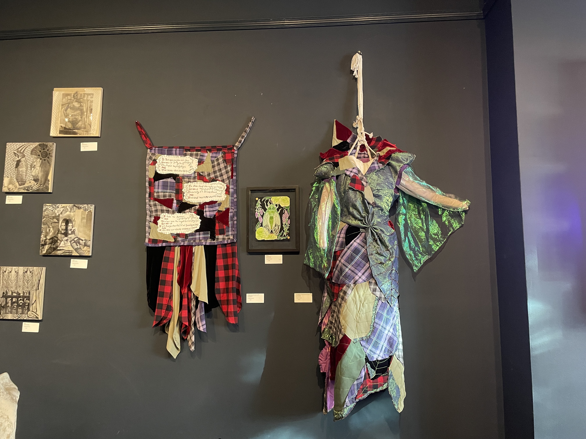
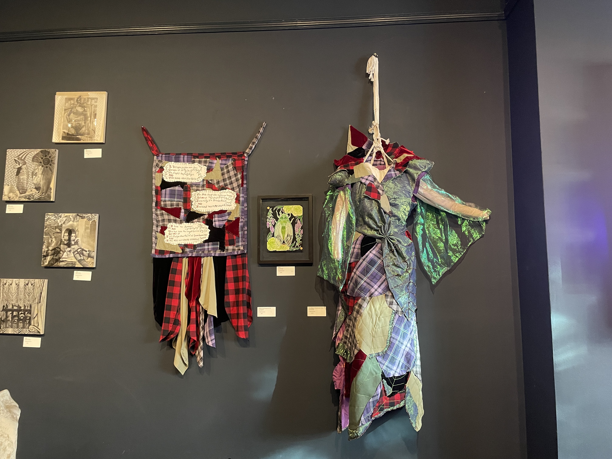

Painting & Illustration
Illustrations by Arlo Blackthorn under the moniker "ZF"
"Making the Devil Cry" Acrylic Paint and Imitation Gold Metal Leaf on Canvas, 18"x24", 2024 | Featured in Heavenly Bodies, Divine Minds, Queer Arts Featured, San Francisco, CA, 2024 | Part of QAF's display collection 2025
“A Little Too Much” Gouache, Watercolor, and Gold on Paper, 22”x30”, 2023 [Blood & Honey] | Featured in SuperFine Art Expo SF, Gallery 308 at Fort Mason, San Francisco, CA, 2023, TerrorBall, The San Francisco Mint, San Francisco, CA, 2023, Heavenly Bodies, Divine Minds, Queer Arts Featured, San Francisco, CA, 2024
“Drone” Gouache, Watercolor, and Gold on Paper, 14 1/2”x21”, 2022 [Blood & Honey] | Featured in SuperFine Art Expo SF, Gallery 308 at Fort Mason, San Francisco, CA, 2023, "Semioculus XVII" Zine published by Semioculus, Tartu, Estonia, 2023, TerrorBall, The San Francisco Mint, San Francisco, CA, 2023
"You Know You Want To" Gouache, Watercolor, and Gold Ink on Paper, 18"x22", 2023 [Blood & Honey] | Featured in TerrorBall, The San Francisco Mint, San Francisco, CA, 2023, Heavenly Bodies, Divine Minds, Queer Arts Featured, San Francisco, CA, 2024
“Les Yeux Sans Visage” Gouache, Watercolor, Gold Ink on Paper, 16”x20”, 2023 [Blood & Honey] | Featured in Art For The Sick, Moth Belly Gallery, San Francisco, CA, 2023
"Ophelia's Angel," Gouache and Gold on Paper, 2022
Cameron, Watercolor on Paper, 4"x2", 2022 | SOLD to private collector [2024]
“Jack-O’-Lantern” Watercolor, Gouache, And Metallic Ink on Paper, 24”x18”, 2024 [Blood & Honey] | Featured in Sunset Pride 2024, Hunt&Gather , San Francisco, CA, 2025

“Let the Weeds Grow In Your Heart” Watercolor and Gold Ink on Paper, 9”x12”, 2024
"Love Letter to a Ghost" Watercolor and Silver Ink on Paper, 15”x18.5”, 2023 | Featured in Sunset Pride 2024, Hunt&Gather , San Francisco, CA, 2024
"Flood" Gouache, Watercolor, and Acrylic on Paper, 22"x15", 2023 [Blood & Honey] | Featured in SuperFine Art Expo SF, Gallery 308 at Fort Mason, San Francisco, CA, 2023
"Copper Lover" Gouache, Watercolor, and Gold Ink on Paper, 9"x12", 2023 [Blood & Honey] | Shown at SuperFine Expo, San Francisco, CA, 2023
“Mala(chite)daptive Day Dreams” Watercolor, Gouache, and Gold on Paper, 16”x16”, 2022 [Blood & Honey] | Featured in SuperFine Art Expo SF, Gallery 308 at Fort Mason, San Francisco, CA, 2023, Sunset Pride, Hunt&Gather, San Francisco, CA, 2023

“Hope You (Arti)choke” Watercolor, Gouache, and Gold Ink on Paper, 13”x12”, 2023 | SOLD to a private collector [2023]
“Star Pitcher” Gouache, Watercolor, and Gold Ink on Paper, 9”x12”, 2023 | SOLD to a private collector [2024]

"Surveillance State" Watercolor, Gouache, and Gold Ink on Paper, 13"x13", 2024 [Blood & Honey] | Featured in "Semioculus XX" Zine published by Semioculus

“Let the Weeds Take Over Your Heart” Watercolor and Gold Ink on Paper, 9”x12”, 2024

“Caffeine Tolerance” Ink and Pencil on Paper, 4"x6", 2024
"Superbloom" Watercolor, Gouache, and Gold Ink on Paper, 16"x16", 2023 [Blood & Honey] | Featured in SuperFine Art Expo SF, Gallery 308 at Fort Mason, San Francisco, CA, 2023, Sunset Pride, Hunt&Gather, San Francisco, CA, 2023
"Gut Feeling (Hello Pluto In Aquarius)" Mixed Media (Watercolor, Gouache, Gold Ink, on paper, thread, glass beads, wood), 28"x22", 2023 [Blood & Honey] | Featured in Art For The Sick, Moth Belly Gallery, San Francisco, CA, 2023, TerrorBall, The San Francisco Mint, San Francisco, CA, 2023
"Hades's Favorite (New Born)" Watercolor, Gouache, and Gold on Paper, 16"x12", 2022 [Blood & Honey] | Featured in SuperFine Art Expo SF, Gallery 308 at Fort Mason, San Francisco, CA, 2023, TerrorBall, The San Francisco Mint, San Francisco, CA, 2023
"Goodbye Pluto in Capricorn" Gouache, Watercolor, and Gold on Paper, 18"x26", 2022 [Blood & Honey] | Featured in SuperFine Art Expo SF, Gallery 308 at Fort Mason, San Francisco, CA, 2023

"Fresh" Watercolor, Gouache, and Gold Ink on Paper, 10"x8", 2023 | SOLD to a private collection [2024] | Featured in Kaleidoscope, The Academy SF, San Francisco, CA, 2023 | Second feature in Subject, Object, Setting, The Academy SF, San Francisco, CA, 2023
[Blood & Honey]
This body of large format gouache and watercolor illustrations take on a particular conversation about body and identity. Blood and Honey explore my relationship to my body, physical and mental disability, queerness and sexuality, and how they all tie into a sense of attempting to escape the feeling of “not belonging”. With the use of malachite, blood, honey, and sticky fruit of the gods I explore the feeling of alienation. Divining a queer soul that lusts guilty through the feelings of lacking ‘usefulness’ as a body and how best one can try to defy that notion. Through the use of gold and strong symbolic imagery I try to elevate these concepts to a state of holiness. I will belong, I will love, I will continue to flourish through blood and honey, I will not apologies for my own power as a vessel of life.
“Mercury” Watercolor and Silver Ink on Paper, 7”x9”, 2023 | Featured in "Dissonance within the Fog" Hosted at the Alchemy House, San Francisco, CA, 2023 | Sold to a private collector [2023]

“Pluto” Watercolor and Silver Ink on Paper, 8”x8”, 2023 | Featured in "Dissonance within the Fog" Hosted at the Alchemy House, San Francisco, CA, 2023 | Sold to a private collector [2023]
“Neptune” Watercolor and Silver Ink on Paper, 8”x8”, 2023 | Featured in "Dissonance within the Fog" Hosted at the Alchemy House, San Francisco, CA, 2023 | Sold to a private collector [2023]
“Venus” Watercolor and Silver Ink on Paper, 7”x9”, 2023 | Featured in "Dissonance within the Fog" Hosted at the Alchemy House, San Francisco, CA, 2023 | Sold to a private collector [2023]
"All the Colors of My Blood" Acrylic and Iron Medium on Canvas, 36"x24", 2022 | Sold to a Private Collector [2022]
"Bicoastal" Acrylic on Canvas, 4'x4', 2022 | Collaborative work with my sibling M. Fondanarosa [www.milofondanarosa.com]

"Come Back to Me" Ink, Gold, and Pencil on Paper, 2022
"Starvation" Gouache, Ink, Pencil, and Gold on Paper, 2022
"Cyber Stalker" Ink, Pencil, Gold Paint on Paper, 2021
"1212 (Sketch)" Pencil on Paper, 2021
"Construction" Pencil, Gold, and Ink on Paper, 2016 | Featured in Voices Embodied Project: Convergence, Chicago IL, 2020 | Original Missing/ Stolen
"Demon Self" Pencil on Paper, 2015 | Shown at "Featured Upcoming Artist", Dick Blick Art Supplies, Paramus, NJ | Original Missing/ Stolen

"Okay, Eve," Acrylic, Gouache, and Gold on Canvas, 16"x20", 2022 | Original Missing/ Stolen
"No More Anger (I Don't Want to be Angry Anymore)" Acrylic on Canvas, 4'x4', 2021-2022 | Featured at the New Bohemia NYE 2024, The San Francisco Mint, San Francisco, CA, 2023-2024
"Not a Toy" Acrylic on Canvas, 2021 [SOLD to a private collector 2021]
"Personal Space" Acrylic on Canvas, 2021 | Featured at the New Bohemia NYE 2024, The San Francisco Mint, San Francisco, CA, 2023-2024 | SOLD to a private collector [2024]
"Titania" Acrylic on Canvas, 2021 | Featured at the New Bohemia NYE 2024, The San Francisco Mint, San Francisco, CA, 2023-2024 | SOLD to a private collector [2024]
"Loving You Was Like Pulling Teeth" Ink, Silver, Marker, Pencil on Paper, 30"x24", 2016
Fibers
Exoskeleton: You Cannot Return to the Dirt


Title - "Struck by Lighting"
Medium - Glass Beads and Muslin on Reclaimed Silk Sleep Shirt
Size - Approximately 2’x2" - US Women's Small
Year - 2023
Title - "Nymph"
Medium - Glass Beads and Muslin on Reclaimed Rayon Shirt
Size - Approximately 2’6”x2’6” - US Women's Small
Year - 2024
Title - "Plague"
Medium - Mixed Media Textile (Japanese Woven Wool, Assorted Glass Beads, Muslin, Polyester Thread)
Size - Approximately 14”x34”
Year - 2021-2024

Title - "The Weight of Sentimental Greed"
Medium - Mixed Media garment (New and Recycled cotton and polyester, polyester thread, glass beads - Displayed on cotton muslin body-form sculpture)
Size - Approximately 6’x3’ - Dress Size 4
Year - 2023

Title - "Panic Blanket"
Medium - Mixed Media and Assorted Reclaimed Textiles
Size - 3’3”x5’7”
Year - 2021-2024
Title - "Night Light"
Medium - Embroidery Floss and Glass Beads on Hand Pomegranate and Traumatic Dyed Cotton
Size - 22"x17"
Year - 2023-2024
Title - "A Religions Experience"
Medium - Mixed Media (Glass Beads, Polyester Thread, Embroidery Floss, on Pomegranate Dyed Cotton)
Size - 23"x18.5"
Year - 2021-2023
Title - "Evil Eye for an Evil Eye"
Medium - Vintage glass beads, embroidery floss, pva glue, polyester thread on cotton blend fabric.
Size - Varied (between 3"x3" and 6"x10" approximately)
Year - 2024
Other Fibers


"Let me Peacock For You" mixed media textile garment, 2024 | Exhibited in "Heavenly Bodies, Divine Minds", Queer Arts Featured, San Francisco, CA, 2024
 



“The Weight of Sentimental Greed” Mixed media textile garment, 2023 | Exhibited in "Kaleidoscope", The Academy SF, San Francisco, CA, 2023 | "Exoskeleton: You Cannot Return to the Dirt", ATA Window Gallery, San Francisco, CA, 2024
“Oh to Build a Chain-link Fence Around Your Heart (Struck by Lighting)” Glass Beads and Muslin on Reclaimed Silk Sleep Shirt, Approximately 2’x2’, 2023 | Exhibited in "Exoskeleton: You Cannot Return to the Dirt", ATA Window Gallery, San Francisco, CA, 2024

"Ecstasy of a Monstrous Death," Mixed Media Fiber Arts, 2024
“Nymph” Glass Heads and Muslin on Reclaimed Rayon Shirt, Approximately 2’6”x2’6”, 2024 | Exhibited in "Exoskeleton: You Cannot Return to the Dirt", ATA Window Gallery, San Francisco, CA, 2024

“The Guillotine Dress” Mixed Media (Cotton muslin, acrylic paint, glass and plastic beads, fake blood, synthetic boning, embroidery thread, synthetic lace, synthetic twill, and silk), 2022 | Exhibited in "Let Them Eat Fake" Liminal Space Gallery, San Francisco, CA, 2022 | "Kaleidoscope" at The Academy SF, San Francisco, CA, 2023


“A Religious Experience” Mixed Media (Glass Beads, Polyester Thread, Muslin, Embroidery Floss, on Pomegranate Dyed Muslin), 23”x18.5”, 2021-2023 | Exhibited in "Subject, Object, Setting", The Academy SF, San Francisco, CA, 2023 | "Exoskeleton: You Cannot Return to the Dirt", ATA Window Gallery, San Francisco, CA, 2024
"A Modest Experience" Mixed Media (Glass Beads, Muslin, Polyester Thread, Embroidery Floss, on Pomegranate and Traumatic Dyed Synthetic Velvet), 10"x10", 2021-2023 | Exhibited in "Subject, Object, Setting", The Academy SF, San Francisco, CA, 2023
“Night Light,” Embroidery Floss and Glass Beads on Hand Dyed Muslin, 22” x 17”, 2023-2024 | Featured in Exoskeleton: You Cannot Return to the Dirt, ATA Window Gallery, San Francisco, CA, 2024